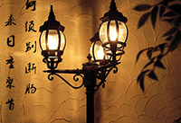

别离，有点难舍，但不怅然；有点遗憾，但不悲观。因为相逢的希望在安慰。不要说珍重，
不要说再见，就这样，默默地离开。但愿，在金色的秋季，友谊之树上将垂下丰硕的果子。 匆匆送得佳人去，夜夜白马踏梦船。 多情自古伤离别，更那堪冷落清秋节。
躲在某一时间，想念一段时光的掌纹；躲在某一地点，想念一个站在来路也站在去路的，让我牵挂的人。 飞吧，大雁！重振你矫健的翅膀。等侯在前方的，不会永远是暴雨和恶浪。这世间还有真诚的友谊赤你辅展着宁静的湖荡。
离别，能使浅薄的感情削弱，却使深挚的感情更加深厚，正如风能吹灭烛光，却会把火扇得更旺。
明天你要去远航，请把这个小步的礼物装在胸膛，它会化成你的信念和力量，鼓舞你去战胜狂风恶浪。
默默地分手，正如当初默默地相遇。愿这儿温馨的微风，给你捎去我的深情的祝福和祈祷。
那些以前说着永不分离的人，早已经散落在天涯了。
不论什么时候，我们都要坚强。每一个相遇都是一种幸福，无论遇到什么,我们可以彼此遇见。
不去惧怕离别，因为我们彼此相遇，有属于我们自己的回忆。要相信、每一次相遇，都是未来幸福的一道曙光。
终于还是要说再见了，在这个苍茫的夏天。天很高，很
蓝，栀子花的香气在风中飘散。我们在黄昏的小路上最后一次的相携走过。听到斜阳里有人在唱着我
们曾经唱过的歌.我们相视而笑。这样的歌声让我们想起了那不再回来的从前,想起了从前的日子里,曾
经看到的无数次别离。我们也曾经在那些别离之外唱歌，但今天轮到了我们。我们在夏天的风里握别，
说一声珍重，再见。
凋零的时光，散落的人影。眸子里流过淡淡的忧伤，轻声叹息；告别这一场终将离别的相聚。
此一别，我们将要各奔东西，离散天涯；这一次，说再见不一定会再见。多年之后，愿大家
都还记得曾经的点点滴滴。执情深处，我于时光间隙看往昔繁华；花开花落中，我点墨描绘
我们的青涩流年。时光的旧胶片一幕幕重演，怀念过去，书写曾经，愿这场年华永不落幕。
为了这次道别，我们用了整个的青春做为铺垫。我们什么都准备好了，这一生将再
也不会有如此豪华而隆重的道别，但泪水还是从我们的心底奔涌而出，就象那些逝去了就再也不肯回来
的年轻岁月。你对我说，不要再流泪了，过去的一切我们将永不忘怀，我们相信这世上还有永远。但是
为什么呢，抬起头的时候，我看见你的眼里也有泪光。那就让我们痛痛快快的哭一次吧。 在这个夏天的
风中，握着你的手，让我们再想起在一起走过的日子，想起那些不再回来的梦想，让所有的一切在心中
再一次的走过。多年以后，我们会在某个相似的夏夜，翻开那本泛了黄的纪念册。所有的字迹都将模糊，
只有那朵被我们夹进本子的栀子花，仍然保留着属于这个夏天的最后一缕香气。
此刻，那一幕繁华，依然清晰
如就。因为有相聚，所以要离别。而所有的离别是为了更好的相聚。赠言：时光易逝，年华易散。可是
这一份记忆却难以磨灭。以后，有缘自会相聚。现在，无需感伤，无需不舍。人生是一场修行，我们要学会有时候必须独自向前走。
正因为分离如此让人牵肠挂肚，相逢时的喜悦才会显得那么珍贵。笑着说再见，因为我们都相信：每一次分别都是为了下一次更好的相遇。